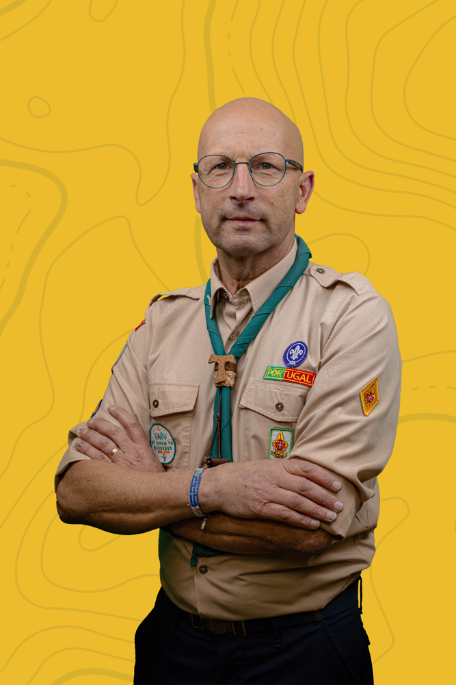
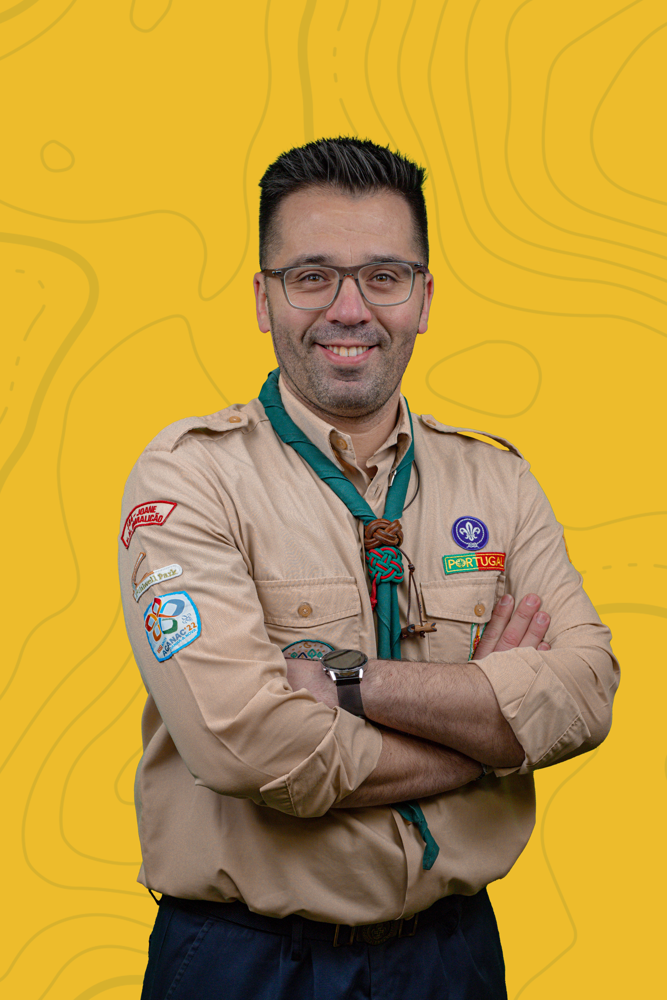
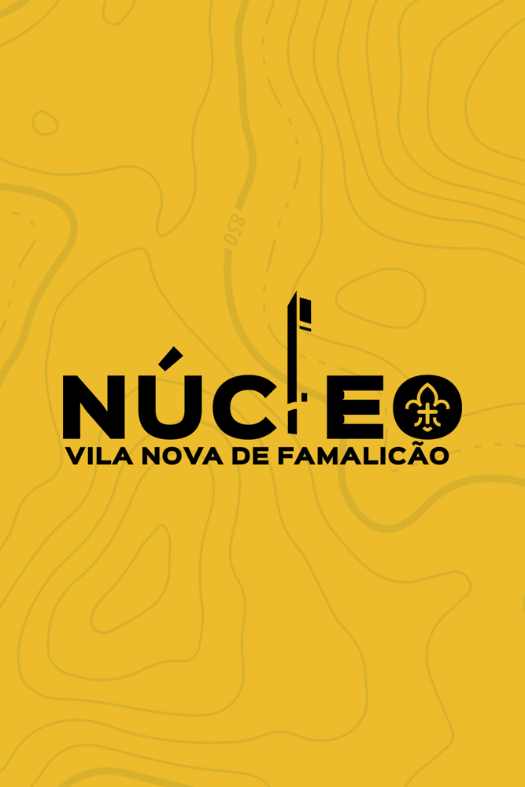
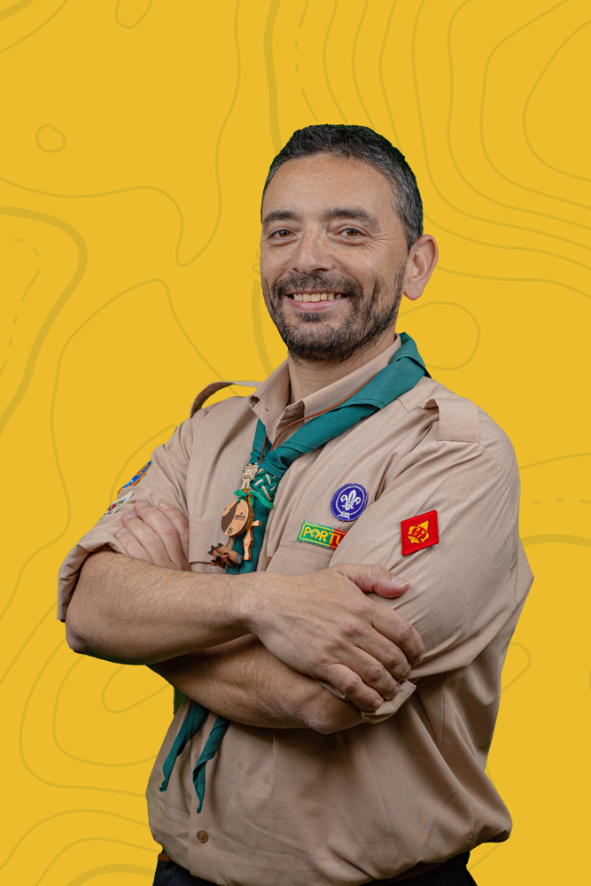
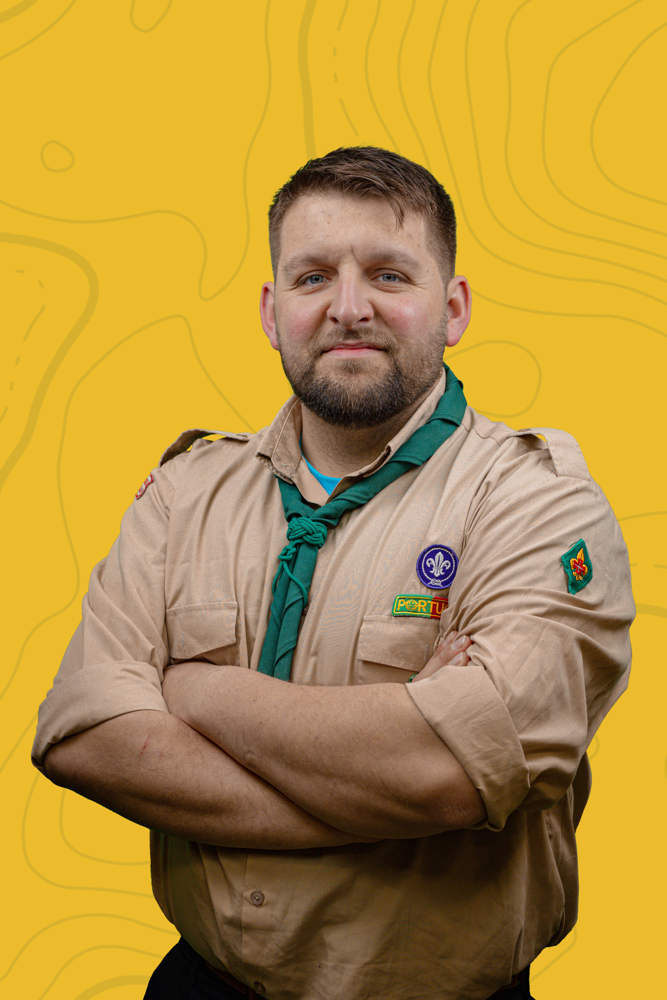

Quem somos
O Núcleo apoia, dinamiza e fortalece o escutismo no concelho de Vila Nova de Famalicão.
Cada agrupamento tem a sua identidade e a sua história. Todos partilham a mesma missão educativa e fazem parte de uma comunidade maior. O Núcleo existe para que essa comunidade funcione: aproxima os agrupamentos, acompanha-os no dia a dia e cria ocasiões para viverem o escutismo em conjunto.
- Apoio aos agrupamentos
- Ajuda administrativa, formativa e logística, para que cada agrupamento se concentre nos seus escuteiros.
- Formação de dirigentes
- Cursos e encontros para que os dirigentes proporcionem experiências seguras e educativas.
- Espírito escutista
- Serviço, companheirismo, responsabilidade e respeito pela natureza.
- Transparência e organização
- Processos claros e alinhados com as normas do movimento.
Junta de Núcleo
A ponte entre os agrupamentos, a Região e a Junta Central. Fala diretamente com quem trata do assunto.
-

Carlos Araújo
Chefe de Núcleo
-

Tiago Silva
Chefe de Núcleo Adjunto
-

Pe. José Carlos Sá
Assistente de Núcleo
-

Rui Costa
Secretário para a Formação
-
Inês Soares
Secretária para a Gestão
-
Maria Inês Silva
Secretária para o Programa Educativo
-

Joaquim Carvalho
Secretário para o Património e Sustentabilidade
-
Pedro Silva
Secretário para a Comunicação e Imagem
-
Fernando Mendes
Secretário Administrativo